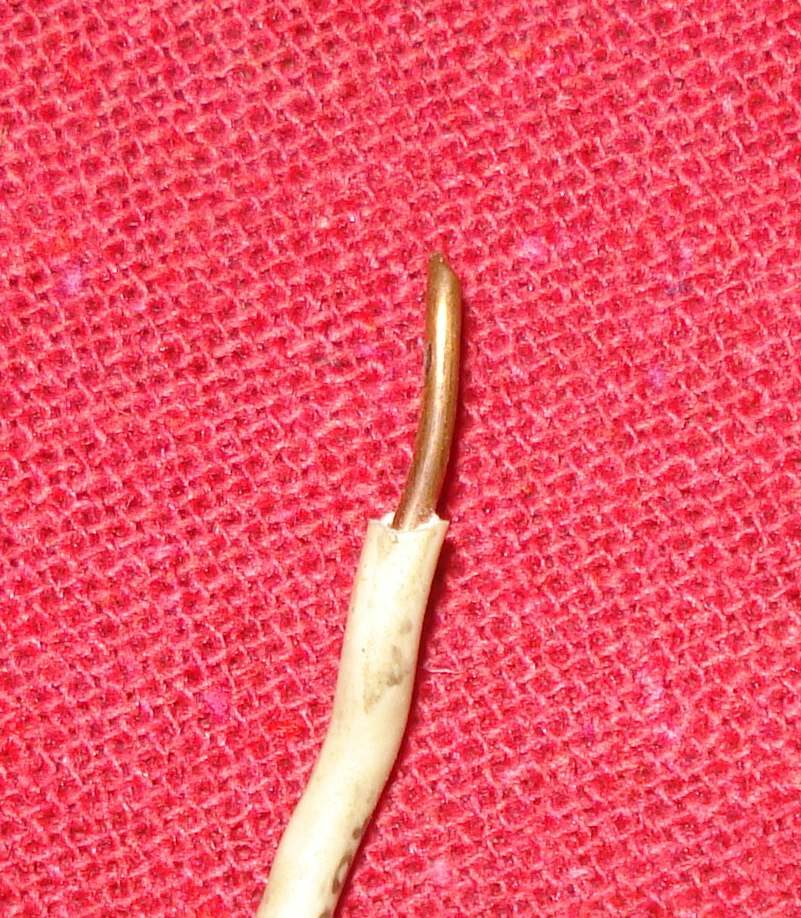

The wire in a repair must carry the current without getting hot. Two choices matter: how thick the wire is, and whether it is stranded or solid. A wrong choice causes warm wire, melted insulation and blown fuses. This page helps you choose before you repair or add to a harness.
Safety
- Disconnect the battery before cutting or joining any wire.
- Never replace a wire with a thinner one.
- Never fit a bigger fuse than the manual calls for. The wire can overheat before the fuse blows and start a fire.
You need
- The wire size and fuse rating in your bike's manual, or the load in amps of the part you are adding.
- Stranded wire of the right size, wire cutters and crimp connectors.
Rules
- Match or exceed the original wire thickness. A thicker wire is fine. A thinner one is not.
- Use stranded wire on a bike. It bends without breaking and survives vibration better than a solid single core.
- Use thick, many-strand cable where the current is large, such as battery and starter leads.
- Starter current is very large, so the cable is thick but its insulation is thin. The wire that carries the starter button signal is thin, because it only feeds a small switch or solenoid coil.
- The wire to the spark plug carries high voltage at very low current, so it is thin but has thick insulation.
- Keep the fuse sized for the wire. If a fuse blows again and again, find out why. Do not fit a bigger one.
How to tell
| Wire | Carries | Looks like |
|---|---|---|
| Battery and starter cable | Very high current at 12 V | Very thick, many fine strands, thin insulation |
| Lighting and accessory wire | Moderate current | Medium thickness, stranded |
| Starter button wire | Small current to a relay or solenoid | Thin, stranded |
| Spark plug lead | High voltage, low current | Thin core, thick insulation |
Steps
- Find the load of the part in the manual or on its label. Choose a wire not thinner than the original.
- Cut a clean piece of stranded wire. Strip the ends and check that every strand is present.
- Join with crimp connectors for strong, heat-proof joints. See Join wires with crimp connectors.
- Fit a fuse of the rating in the manual close to the power source.
- Route the wire away from sharp edges, the chain and hot parts. Secure it with ties.
- Reconnect the battery and test the circuit.
Check your work
- The wire stays cool to the touch after the part has run for a while.
- The fuse does not blow.
- No insulation is cut or rubbing.
If it did not fix the problem
- See Wire an accessory safely.
- If a fuse keeps blowing, go to Fuse keeps blowing.
- A burning smell means stop and check: Burning smell from the wiring.